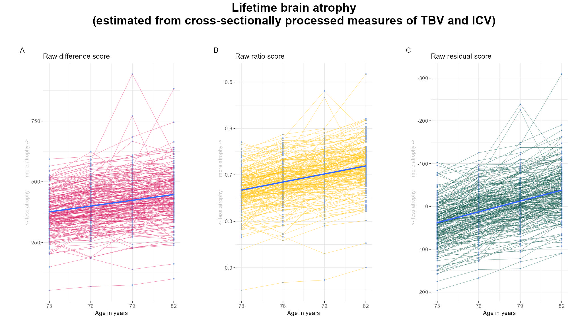

Code
library(ggplot2)
library(data.table)
library(ggpubr)
library(patchwork)This analysis was moved to the Supplement during revisions of the paper. It shows that measures of lifetime brain atrophy worsen over a 9-year period in LBC1936, even when we cross-sectionally process our neuroimaging data (as opposed to using FS longitudinal processing).
Neuroimaging data used here was prepared using code displayed in ‘Data preparation’: LBC: neuroimaging data.
This function plots trajectories of a variable across multiple time points.
plotTraject <- function(dat = all, y = "diff", col = "#D81B60"){
# change variable naming for plot to work in function
names(dat)[which(names(dat) == y)] <- "y"
p = ggplot(data = dat)+
geom_point(aes(x = age, y = y, group = lbc36no), color = "#82A0D8", size = .5)+
geom_line(aes(x = age, y = y, group=as.factor(lbc36no)), color = col, linewidth = 0.2, alpha = .6) +
geom_smooth(aes(x = age, y = y), method = "lm", se = F) +
xlab("Age in years")+
ylab("")+
scale_x_continuous(breaks = c(73, 76, 79, 82))+
theme(legend.position = "none")+
theme_bw()+
theme(text = element_text(size=10),
plot.margin=unit(c(1, 1, 1, 1), "cm"),
axis.text.y = element_text(size = 9),
axis.text.x = element_text(size = 9),
axis.title.y = element_text(size = 9, color = "grey"),
plot.title = element_text(size = 12, hjust = 0),
panel.border = element_blank())
return(p)
}# get cross-sectionally processed data from
# wave 1
wave1 = fread(paste0(wd, "/LBC1936_crossNeuroWave1.txt"))
wave1$wave = "wave 2"
wave1$age = 73
# wave 2
wave2 = fread(paste0(wd, "/LBC1936_crossNeuroWave2.txt"))
wave2$wave = "wave 3"
wave2$age = 76
# wave 3
wave3 = fread(paste0(wd, "/LBC1936_crossNeuroWave3.txt"))
wave3$wave = "wave 4"
wave3$age = 79
# wave 4
wave4 = fread(paste0(wd, "/LBC1936_crossNeuroWave4.txt"))
wave4$wave = "wave 5"
wave4$age = 82
# rbind wave data
all = rbind(wave1, wave2, wave3, wave4)
# only keep participants who have all measurement points
save = table(all$lbc36no) == 4
IDs = dimnames(save)[[1]][as.vector(save)]
all = all[all$lbc36no %in% IDs,]
#### later edit: so far this data has a residual score for each of the visits meaning that there can never be an increase with age in the residual score
# Hence, here we standardise across all waves to be able to compare different time points
# estimate residual model
model <- lm(TBV ~ ICV, data = all)
all$residALL = as.vector(resid(model, na.rm=T))This is now Supplementary Figure 12.
p_diff = plotTraject(dat = all, y = "diff", col = "#D81B60") +
ggtitle("Raw difference score")+
ylab("<- less atrophy more atrophy ->")
p_ratio = plotTraject(dat = all, y = "ratio", col = "#FFC107") +
ggtitle("Raw ratio score") +
scale_y_reverse() +
ylab("<- less atrophy more atrophy ->")
p_resid = plotTraject(dat = all, y = "residALL", col = "#004D40") +
ggtitle("Raw residual score")+
scale_y_reverse()+
ylab("<- less atrophy more atrophy ->")
#cowplot::plot_grid(p_diff, p_ratio, p_resid, nrow = 1, labels = c("A", "B", "C"), label_size = 6, rel_widths = c(1,1,1))
## overall title: "Estimated brain atrophy in LBC1936 (cross-sectional processing)"
plot = (p_diff | p_ratio | p_resid) +
plot_annotation(title = "Lifetime brain atrophy\n(estimated from cross-sectionally processed measures of TBV and ICV)",
tag_levels = "A",
theme = theme(plot.tag = element_text(face = "bold"),
plot.title = element_text(face = "bold", size = 20, hjust = 0.5)))
ggsave("EstimatedAtrophy_LBC1936_wave2to5.jpg", bg = "white",plot = plot, width = 35, height = 20, units = "cm", dpi = 150)